The tiles#
Every tile is its own small board on the bus, with two identical cable connectors, so tiles can be mixed in any combination and any order (see Plugging it together). This page describes what each one is and what you can do with it.
Most tiles come in a plain version and an RGB version. The RGB version is the same board with a colour LED under every key. It reports the same tile type, plus its LEDs, so anything that works on the plain tile works on the RGB one. The LEDs add colours, a white flash when a key is pressed, and colours the robot can change during a match. See LED colours.
Sizes are the bare board. Grid is the case’s size in 28 mm openGrid cells; see Printing the cases.
Key tiles#
All key tiles take Cherry MX-compatible switches in hot-swap sockets: the switches push in by hand, with no soldering. Each key can be bound to any of the 32 buttons, several keys can share one button, and one key can press several buttons at once. See Binding buttons.
mx1 and mx1rgb#
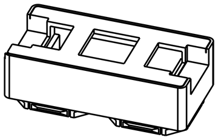
One key, centred on the board.
| Keys | 1 |
| LEDs | mx1rgb: 1 |
| Size | 40 × 20 mm |
| Grid | 2 × 1 |
mx1 1x1 and mx1rgb 1x1#
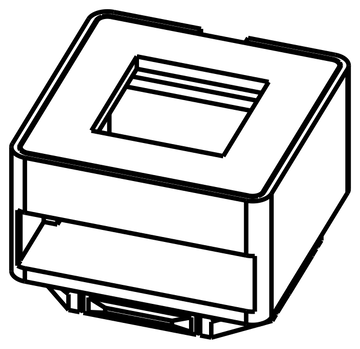
The same single key on the smallest board, for a 1 × 1 cell. Both cable connectors are on the back, side by side, so both cables leave from the back along one edge.
| Keys | 1 |
| LEDs | mx1rgb 1x1: 1 |
| Size | 25 × 25 mm |
| Grid | 1 × 1 |
mx3 and mx3rgb#
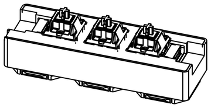
Three keys in a row. The RGB version is 2 mm taller, so the two do not share a case; only mx3rgb has one so far.
| Keys | 3 |
| LEDs | mx3rgb: 3 |
| Size | mx3: 66 × 20 mm; mx3rgb: 66 × 22 mm |
| Grid | mx3rgb: 3 × 1 |
mx4 and mx4rgb#
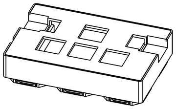
Four keys as a WASD cluster: three in a row with one above the middle. Key 1 is the top key (W), and keys 2 to 4 are the bottom row from left to right (A, S, D).
| Keys | 4 |
| LEDs | mx4rgb: 4 |
| Size | 57 × 39 mm |
| Grid | 3 × 2 |
mx6rgb#
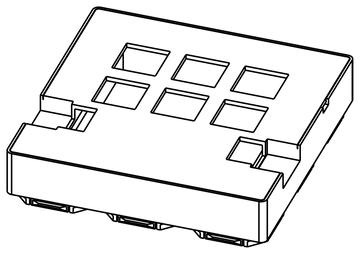
Six keys in a 3 × 2 grid, each with a colour LED. Six LEDs at full white still fit the default USB power budget.
| Keys | 6 |
| LEDs | 6 |
| Size | 60 × 60 mm |
| Grid | 3 × 3 |
Arcade buttons#
arc4#
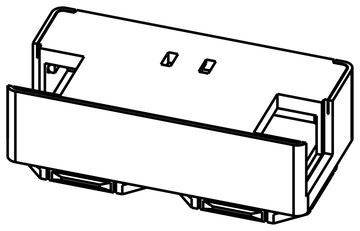
Four arcade buttons, each on its own 3-pin JST PH lead. The buttons are panel-mounted wherever you want them, and the tile sits behind the panel. The leads carry ground, the button’s switch, and +5 V for a lamp in the button. The lamp feed is always on; the board does not switch it.
| Buttons | 4 |
| Size | 50 × 25 mm |
| Grid | 2 × 1 |
Rotary encoders#
An encoder is a knob that turns without an end stop and clicks as it turns. Each one also presses in, like a key. A turn can drive an axis, press a button once per click, or, on an FTC Driver Station, count on a trigger so the robot code can read the knob’s position. See Rotary encoders.
enc1#
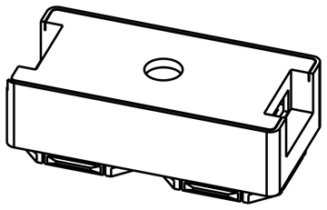
One encoder, centred.
| Encoders | 1, with push |
| Size | 44 × 20 mm |
| Grid | 2 × 1 |
enc2#
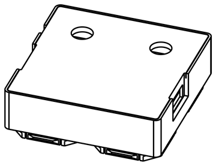
Two encoders side by side.
| Encoders | 2, each with push |
| Size | 50 × 50 mm |
| Grid | 2 × 2 |
Display tiles#
Display tiles show text, and the colour ones also show pictures. You can write to them from the config app, and the robot can change what they show during a match by sending a number, a legend code. See Display tiles and legends and Changing legends in a match.
disp1#
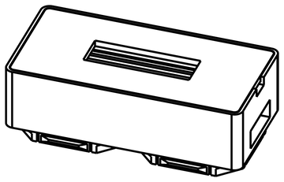
A 0.91” 128 × 32 monochrome text panel. A readout, not a control: it has no keys. The robot can swap its text between prewritten messages.
| Display | 128 × 32 mono, 21 characters × 4 rows |
| Size | 50 × 20 mm |
| Grid | 2 × 1 |
disp2#
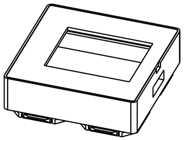
A 1.8” colour display, 160 × 128, landscape. It shows coloured text, and it stores up to 32 pictures on the tile, so the robot can switch between them instantly.
| Display | 160 × 128 colour, 13 characters × 8 rows |
| Pictures | 32 stored |
| Size | 50 × 40 mm |
| Grid | 2 × 2 |
screenkey1#
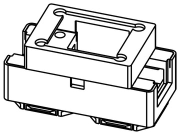
One key whose keycap is a 128 × 128 colour screen, so the key’s label can change: INTAKE while collecting, CLIMB in the endgame. The screen key module stands on the case and plugs into the tile on a short cable. Like disp2, it stores up to 32 pictures.
| Keys | 1 |
| Display | 128 × 128 colour, 10 characters × 8 rows |
| Pictures | 32 stored |
| Size | 50 × 22 mm |
| Grid | 2 × 1, or 2 × 2 to hide the cable |
Bus parts#
This has no processor and does not show up as a tile. It only shapes the cabling.
Splitter#
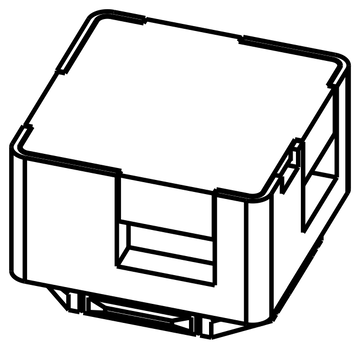
Four connectors wired together, one on each edge, so the chain can branch. See Splitting the chain.
| Connectors | 4 |
| Size | 20 × 20 mm |
| Grid | 1 × 1 |